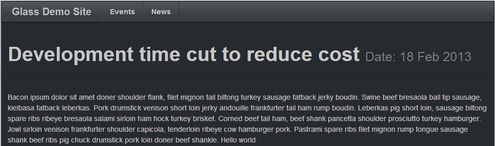
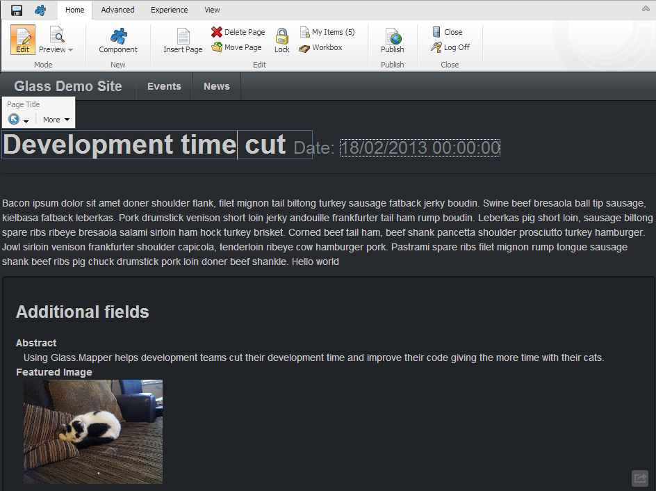

One of the best features of Sitecore is the Page Editor, in this tutorial we will look at how we can use the Page Editor with Glass.Mapper.
We are going to use the News Article in the previous tutorial to create a simple page that displays the news article and allow the content editor to edit all fields in the Page Editor.
To start we have to add an additional property to the NewsArtcile class to represent the Sitecore ID. The property that represents the Sitecore ID is required to allow Glass.Mapper to link your model to the actual Sitecore item in Page Edit mode.
using System;
using Glass.Mapper.Sc.Configuration;
using Glass.Mapper.Sc.Configuration.Attributes;
using Glass.Mapper.Sc.Fields;
namespace Glass.Mapper.Sites.Sc.Models.Content
{
[SitecoreType]
public class NewsArticle
{
[SitecoreId]
public virtual Guid Id { get; set; }
[SitecoreField]
public virtual string Title { get; set; }
[SitecoreField]
public virtual string Abstract { get; set; }
[SitecoreField]
public virtual string MainBody { get; set; }
[SitecoreField]
public virtual Image FeaturedImage { get; set; }
[SitecoreField]
public virtual DateTime Date { get; set; }
[SitecoreInfo(SitecoreInfoType.Url)]
public virtual string Url { get; set; }
}
}
Our model can now work with the Page Editor, next we need to create a Sublayout in Sitecore called NewsArticleSublayout. In the previous examples we manually retrieved the item from Sitecore in the Page_Load method however we can make this simpler by making the Sublayout inherit from the GlassUserControl. This control is generic and takes the type that you want to be loaded:
using Glass.Mapper.Sc.Web.Ui;
using Glass.Mapper.Sites.Sc.Models.Content;
namespace Glass.Mapper.Sites.Sc.layouts.Site.Content
{
public partial class NewsArticleSublayout : GlassUserControl<NewsArticle>
{
}
}
The GlassUserControl already has a property called Model and also has some useful methods to make fields editable.
The code for the ASCX page is shown below:
<%@ Control Language="C#" AutoEventWireup="true" CodeBehind="NewsArticleSublayout.ascx.cs" Inherits="Glass.Mapper.Sites.Sc.layouts.Site.Content.NewsArticleSublayout" %>
<div class="page-header">
<h1><%=Editable(x=> x.Title) %> <small>Date: <%=Editable(x => x.Date, x => x.Date.ToString("dd MMM yyyy")) %></small></h1>
</div>
<%=Editable(x=> x.MainBody )%>
<% if (IsInEditingMode)
{ %>
<div class="well">
<h3>Additional fields</h3>
<dl>
<dt>Abstract</dt>
<dd>
<%=Editable(x=>x.Abstract) %>
</dd>
<dt>Featured Image</dt>
<dd>
<%=Editable(x=>x.FeaturedImage) %>
</dd>
</dl>
</div>
<% } %>
There are several different examples of using the Page Editor in this page. The simplest form is simply specify this field you want to edit in the lambda expression:
<%=Editable(x=> x.Title) %>
<%=Editable(x=> x.MainBody )%>
The second more complicated method of make a field Editable takes two parameters, this has been used to make the Date field editable. The first parameter instructs Glass.Mapper which field to make editable, the second parameter then specifies what the output should be when the page is not in page editing mode. This allows you to control the output of the field when in the two different modes.
<%=Editable(x => x.Date, x => x.Date.ToString("dd MMM yyyy")) %>
Finally we can see the additional property IsInEditingMode, this can be used to control sections that should only be rendered in Page Edit mode.
Compiling the page and navigating to the page in normal mode we get the standard news article page:
In editing mode we can see that all the fields are editable and our additional fields also render:
In this tutorial you have seen how simple it is to make a field editable using Glass.Mapper and the advantages of using the GlassUserControl control.